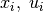
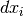
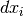

Notes on implementation¶
This section contains some explanations on the code which don’t fit in the docstrings or the background section.
Evaluation of the equation system and its jacobian¶
Both the equation system and its jacobian consist of linear and nonlinear parts. Therefor their evaluation is divided into these two steps.
In the following we denote by  the spline object we
created for the  -th system or input variable and the first
derivatives of the system variables by .
-th system or input variable and the first
derivatives of the system variables by .
... to be continued!
Smoothness and boundary conditions for the splines¶
... to be continued!